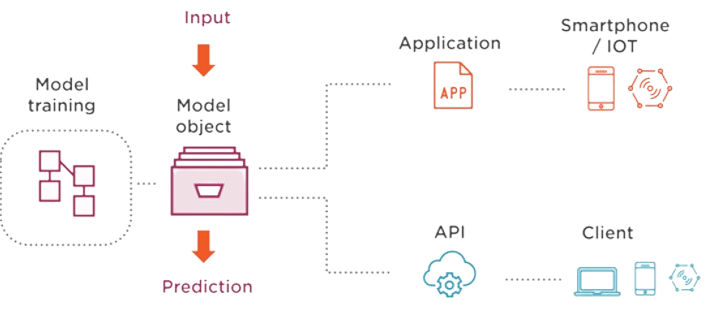
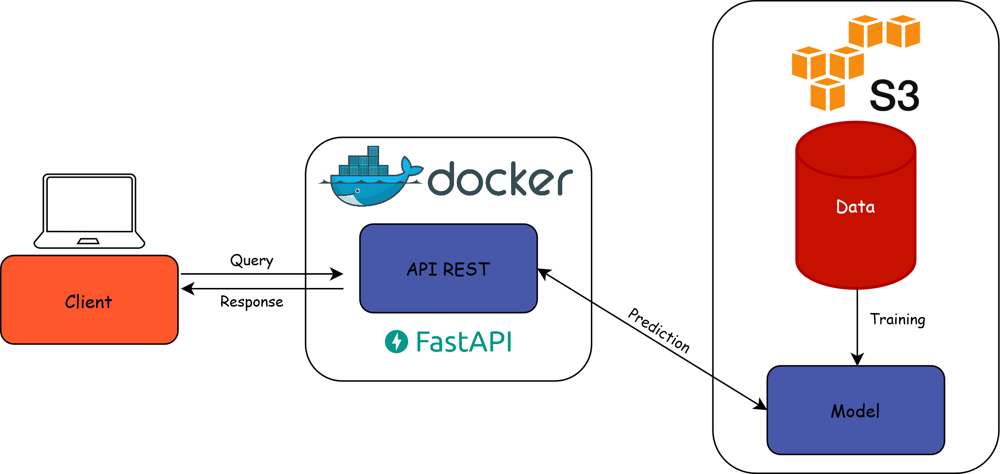
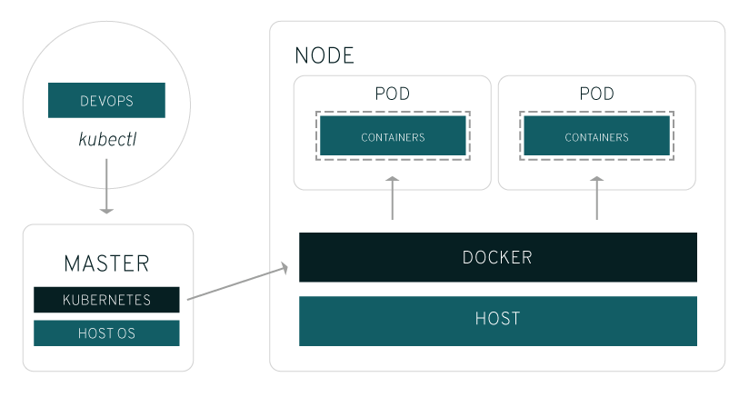
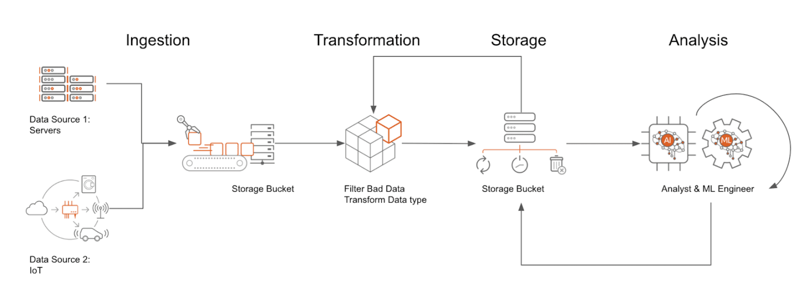

Mise en production des projets de data science
Cours de 3e année à l’ENSAE (Séance #5)
2024/2025
Rappels séance #4
- On a trouvé comment construire une reproduction de l’ordinateur qui faisait tourner notre code
- Avec
Docker
- Avec
- On ne va pas demander à chaque utilisateur de notre application de faire tourner ce code
- Il nous reste à automatiser la livraison de celui-ci
Note
Retrouver les slides précédentes sur ensae-reproductibilite.github.io/slides/
6️⃣ Introduction au format YAML
Qu’est-ce que le format YAML ?
- YAML Ain’t Markup Language
- Langage de sérialisation de données
- Structure expressive mais lisible
Pourquoi s’intéresser au YAML ?
- Outil standard pour les fichiers de configuration
- Simplicité et puissance du paradigme déclaratif
- On décrit l’état final souhaité
- L’implémentation est laissée au moteur sous-jacent
YAML vs. JSON
YAMLest un superset deJSON- Tout fichier
JSONvalide est un fichierYAMLvalide
- Tout fichier
- Structure basée sur l’indentation
- Favorise la lisibilité
- Plus prône aux erreurs
- Convertisseurs : yaml-to-json, json-to-yaml
Caractéristiques d’un fichier YAML
Extension :
.yamlou.ymlStructure hiérarchique basée sur des paires clé-valeur
Différents types à disposition (numériques, strings, booléens, listes)
Validation et erreurs fréquentes
- Principale erreur : mauvaise indentation
- Utiliser 2 espaces (pas de tabulation!)
- Outils de validation :
- Support natif dans la plupart des IDE
- Linters : YAMLlint
YAML et l’approche GitOps
- Le YAML est le langage privilégié de l’approche GitOps
- Les manifestes sont déclarés en
YAML(paradigme infrastructure as code) - Les manifestes sont stockés sur un dépôt
Git(approche GitOps)
- Les manifestes sont déclarés en
- Cette approche a de nombreux avantages :
- Reproductibilité
- Traçabilité
- Automatisation
7️⃣ Déploiement
Un sujet large
- Les questions essentielles à se poser :
- Quel est le format adapté pour valoriser le projet ?
- Quelle infrastructure de production ?
- Comment automatiser le processus de déploiement ?
- Comment suivre l’application en production ?
- De nombreuses choix possibles
- Présentation des concepts et outils standards
Formats de valorisation
- Critères à prendre en compte :
- Quels sont les utilisateurs potentiels ?
- Quels sont leurs besoins ?
- Exemple : mise à disposition d’un LLM

Cas d’usage
- Servir un modèle de ML via une API
Les APIs
Une API (application programming interface ou « interface de programmation d’application ») est une interface logicielle qui permet de « connecter » un logiciel ou un service à un autre logiciel ou service afin d’échanger des données et des fonctionnalités.
- Définition peu informative
Python,scikit-learn,Docker, etc. sont des APIs- En pratique, on signifie généralement une API REST
Les APIs REST
- API RESTful : API conforme au style d’architecture REST
- Communication via le protocole HTTP
- En pratique :
- On requête un endpoint (ex : l’API de la BAN)
- Avec des requêtes HTTP (
GET,POST, etc.) (ex : rues contenant “comédie”)
Architecture cible
- Construire une API pour servir le modèle
- Interface entre l’utilisateur et le modèle entraîné

Environnement de production
Dépend essentiellement de l’infrastructure à disposition
Propriétés recherchées :
- Adapter les ressources (scaler) selon les besoins
- Déploiements reproductibles et automatisés
- Monitoring de l’état de santé des applications
Solution : utiliser un orchestrateur de conteneurs
- Base du
SSP Cloud: Kubernetes
- Base du

Fonctionnement de Kubernetes

L’approche CI/CD
- Intégration continue (CI) : chaque commit déclenche un processus “test, build and release”
GitHub: GitHub ActionsGitLab: GitLab CI/CD
- Déploiement continu (CD) : les nouvelles releases sont automatiquement déployées
- Sur le
SSP Cloud: ArgoCD
- Sur le
CI : implémentation avec GitHub Actions
- Principe : commit -> exécution d’une série d’étapes
- Script exécuté sur une VM : runner
- Mise à disposition d’un output : artifact
- Multiples outputs possibles
CI : anatomie d’un fichier de CI
- Spécification : fichier
.yamlqui paramétrise le runner- ⚠️ Situé dans le dossier
.github/workflows/
- ⚠️ Situé dans le dossier
.github/workflows/ci.yaml (fin)
- name: Docker meta
id: meta
uses: docker/metadata-action@v5
with:
images: ensae-reproductibilite/api-titanic
- name: Login to Docker Hub
uses: docker/login-action@v3
with:
username: ${{ secrets.DOCKERHUB_USERNAME }}
password: ${{ secrets.DOCKERHUB_TOKEN }}
- name: Build and push
uses: docker/build-push-action@v5
with:
push: true
tags: ${{ steps.meta.outputs.tags }}
labels: ${{ steps.meta.outputs.labels }}CI/CD : implémentation sur Kubernetes

Pipeline DataOps complet
- Intégration des étapes dans un pipeline (DAG)

- En pratique : utilisation d’un orchestrateur
- Sur le
SSP Cloud: Argo Workflows
- Sur le
Conclusion
- On a construit un pipeline reproductible et automatisé

- Comment tenir compte des spécificités du ML ?
- Approche MLOps: la semaine prochaine !
Application
Mise en production
- Consignes sur le site du cours
- Partie 4️⃣ : automatisation de la livraison d’une application avec l’intégration continue
- Partie 5️⃣ : déploiement d’une application et industrialisation
Et la suite ?
- Dernière séance sur les enjeux spécifiques au cycle de vie des projets ML (
MLOps) 🚀
Bonnes pratiques pour la mise en production des projets de data science (retour homepage)